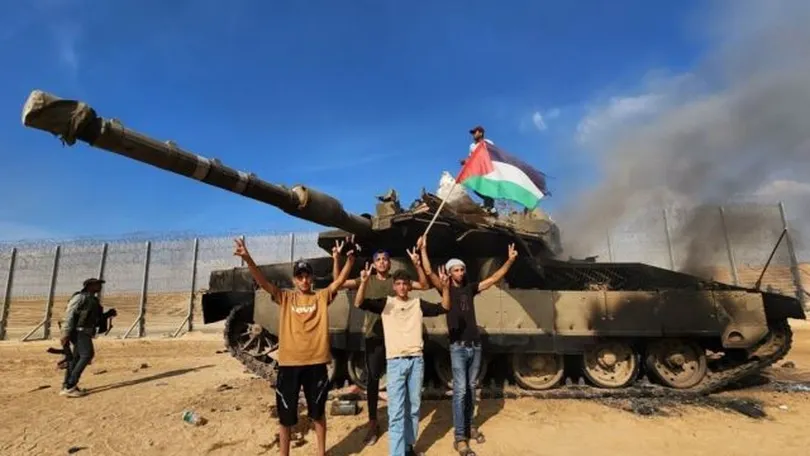
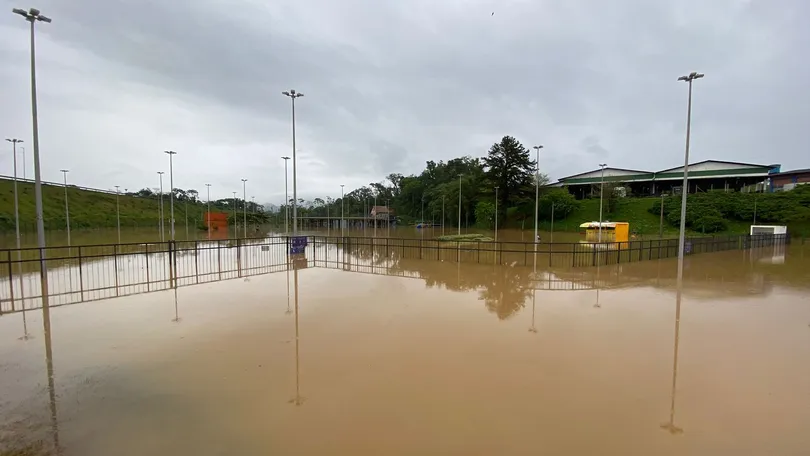

 Ataques do Hamas O que acontecia na região antes da ofensiva do Hamas. Ataques do Hamas: entenda o contexto da escalada de violência e o que acontecia na região antes da ofensiva do grupo extremista islâmico armado.
Entenda a diferença entre israelenses, palestinos e o Hamas Conflito entre Israel e o Hamas deixou dezenas de mortos e centenas de feridos entre sábado (7) e este domingo (8). Impasse entre grupos dura décadas e envolve disputa por território.
Amigo de brasileiro desaparecido após ataque em Israel relata tensão: 'ninguém sabe onde ele tá' Segundo família, Ranani Glazer não é visto desde que entrou em um bunker para escapar dos bombardeios próximos à Faixa de Gaza.
 Após suspender a Oktoberfest, Blumenau decreta situação de emergência por causa das chuvas Há 107 desabrigados na cidade, segundo a Defesa Civil. Aulas foram canceladas, e o transporte coletivo está suspenso neste domingo (8).